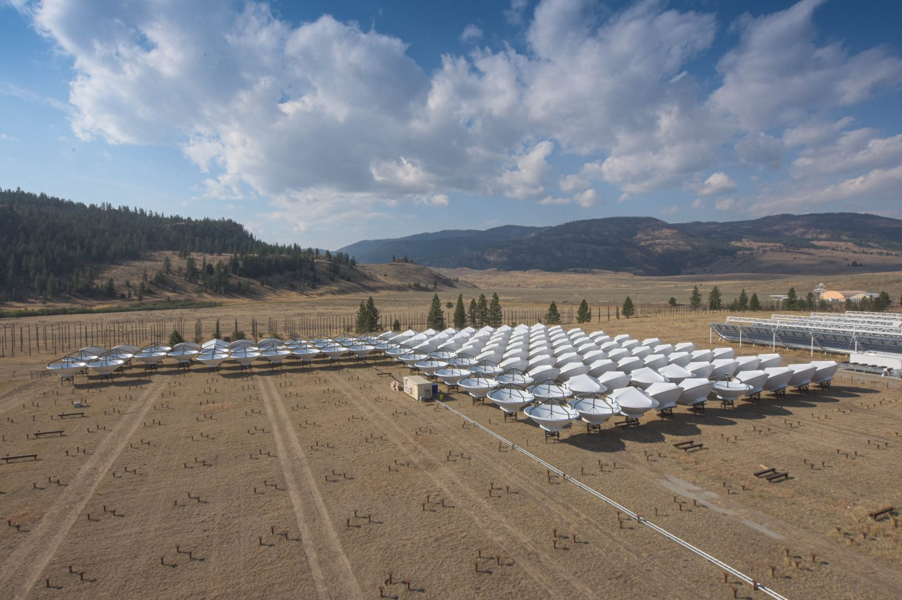
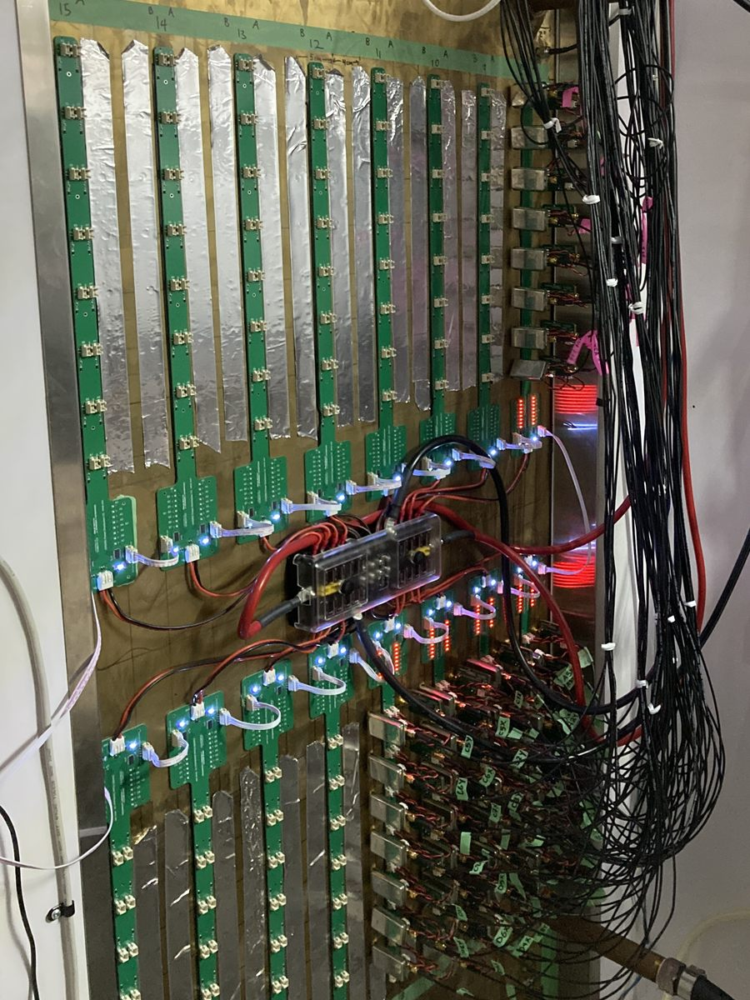

2023 – present
CHORD
The Canadian Hydrogen Observatory and Radio-transient Detector (CHORD) is a next-generation radio telescope with a planned core of 512 six-metre dishes operating at 300–1500 MHz, plus outrigger stations for very long baseline interferometry. It builds on CHIME to study fast radio bursts, cosmology and fundamental physics.
My role. I lead the team developing the analog signal transport from the low-noise front ends to the digitizers: amplification, filtering and gain equalization, and a remotely monitored power system. We validate these systems on the CHORD pathfinder and oversee manufacturing and integration for the core array. I also contributed to the construction of the CHIME/FRB Outriggers.
Papers
- CHIME/FRB Outriggers: Design Overview ApJ, 2025

